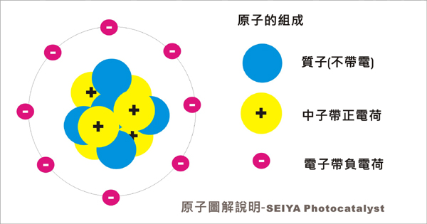

光觸媒應用產品
我們提供相關產品開發設計,因多數產品為客制品,且有與客戶簽訂保密條款
如有需求請洽我們

(Photocatalyst)
光觸媒原理發現至今已50餘年,它是由日本東京大學的藤嶋昭（Fujishima Akira）於1972年所發現,當半導体物質小到奈米尺寸,部份物質會有光催化特性,此時奈米材料在光的照射下通過光能轉換為化學能,促進化合物的合成或使化合物（分）降解的過程稱之光催化(光觸媒)
簡單的說就是金屬半導體原本是不良導體,但受到光照射後就可能轉換成良導体,這種能量稱之為能隙(Gap),也可以說當光(某些特定之波長)的照射產生催化作用,使得觸媒(註1)物質產生一連串之化學 物理反應,(觸媒就是可改變化學反應的物質),理論上觸媒其本身體並不產生任何變化,(實際上,戶外有大自然風化等摩擦力會隨時間將其磨損造成微量損失)
光觸媒在吸收光後,成為高能量狀態，再將此高能量輸給反應物質,它可產生遠較臭氧更強的氧化力此強氧化 與環原能力力可分解所有害機物質成為水或二氧化碳等無毒無臭的物質,而此作用只在於其表面,所以不會像臭氧或消毒劑會傷害我們的呼吸系統,這是它的優點,也是它在產品應用上必考慮之缺點
我們可以更簡單的說,在植物中的光合作用就如同光觸媒般,在光合作用中葉綠素吸收了二氧化碳及水並經過光的照射而產生了葡萄糖及氧,這就是最為大家所熟知之光催(化作用之一,因此只要是經過光產生反應,都可以稱之為光觸媒反應,而不局限於大家所熟知之納米 或奈米(註2)二氧化鈦.

有許多材料都具有此光觸媒反應現象因選擇二氧化鈦原因在於它有很好穩定性,且是完全無毒,當二氧化鈦在奈米化(納米化),其物理性會改變,因此將光照射於奈米二氧化鈦材料上,原本之半導體就會變成導體(註3)其原子(註4)之電子就會吸收能量,激發跳脫能階隙(註5),產生帶負電的電子和帶正電的正孔(電洞),，由於它產生了電子(還原能力)與電洞(氧化能力),在傳導帶產生過氧基.價電子帶則是產生氫氧離子。它 和空氣中水(H2O)及氧(O2)作用則可產生〝OH￣( 氫氧負子) 〞或超級氧化陰游子（superoxide r adicals）O2￣等活性氧，此活性氧中OH¯根氧化力較大。
簡單說氧化能力強,就代表它可分解有機物能力強,像細菌病毒.廁所廚房惡臭味等等都是有機物.
〝OH根〞所具的能量為120kcal/mol,其遠較構成有機物的分子間的結合能為大(大約都在100kcal/mol以下)，因此很容易切斷有機物的分子結合而使其分解。利用此作用可將溶解於水中的種種有害物質或空氣中的惡臭化學物質簡單的分解為無害物質,尤其〝OH¯根〞的氧化力遠較廣大使用於消毒、殺菌的氯氣和次亞氯酸，過氧化氫、臭氧、二氧化氯等化合物為強，因此 理論上是可將所有有害物的有機物質分解變為水和二氧化碳等無害物質,而 進行殺菌作用，因此可用於脫臭、抗菌、防霉、分解污垢、自身洗淨（self cleaning） 等項目。
觸媒的反應與接觸面積有關, 另外此在溫度壓力有關,而奈米化之TiO2催化作用也與空氣中氧份.濕度及光強度也有關,這些因素都可加速其單位時間分子有效之碰撞(反應),除此外在光強度等其它有利條件上都有有利於反應.

註解說明
(註1)觸媒(催化)就是一種化學反應,它能夠加速(或延遲)物質反應之速率其單位,其單位為mol/L·min,它是用在某一單位時間內反應之濃度的減少或生成物之增加量來表示,其在反應前後並不產生變化。
(註2)Nano納米(中國大陸稱法).奈米(台灣稱法)(nano meter,簡寫nm)為一種尺吋長度之單位,10的負9次方米,1米=1 000 000 000 nm,1mm=1 000 000 nm.而大多病毒尺寸大約都在50-500 奈米間
(註3)半導體它是一種介於絕源體(阻礙電流)與導體(讓電流通過)之材料,一般之半導体之能階隙在1-3電子伏特(eV),如能夠給予適當能量激發,或改變其能階之間距,此材 料就變成導體,能夠導電.
(註4)原子自然界物質均由原子組成,其原子則由質子(proton),中子(neutron),電子(electron)所組成
(註5)能階在穩定狀態下,電子是位於價電帶上,里的不同能階,而價電帶與傳倒帶間,稱之能階隙,二氧化鈦為半導體和,此半導體原本為不良導體,但經過光的照射變產生導體,而這種能量差我們稱之能隙(band gap),光觸媒能階圖解說明,如同太陽能發電也是利用期能階隙原理產生電能.
二氧化鈦它是安全及穩定性高的物質,可用於食品添加劑,如口香糖上,可用於化妝品上如防曬產品,在工業上油漆.橡膠.造紙..等等也有大量應用, 但其粉末尺寸還是相當大,必須要達到奈米級尺寸,才有光觸媒效應,在美國NFPA 704(消防協會)中,反應活性 為0,代表期非常穩定安全,在可燃性等級也列為0,是不會燃燒。


我們提供相關產品開發設計,因多數產品為客制品,且有與客戶簽訂保密條款
如有需求請洽我們